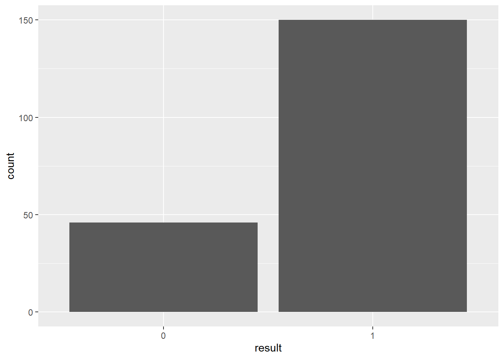
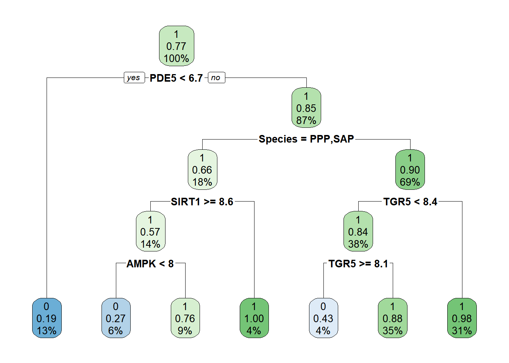
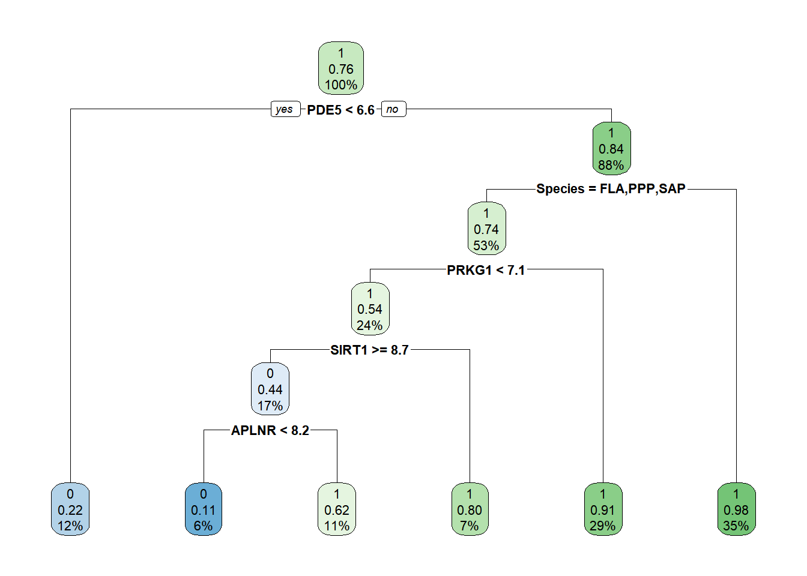
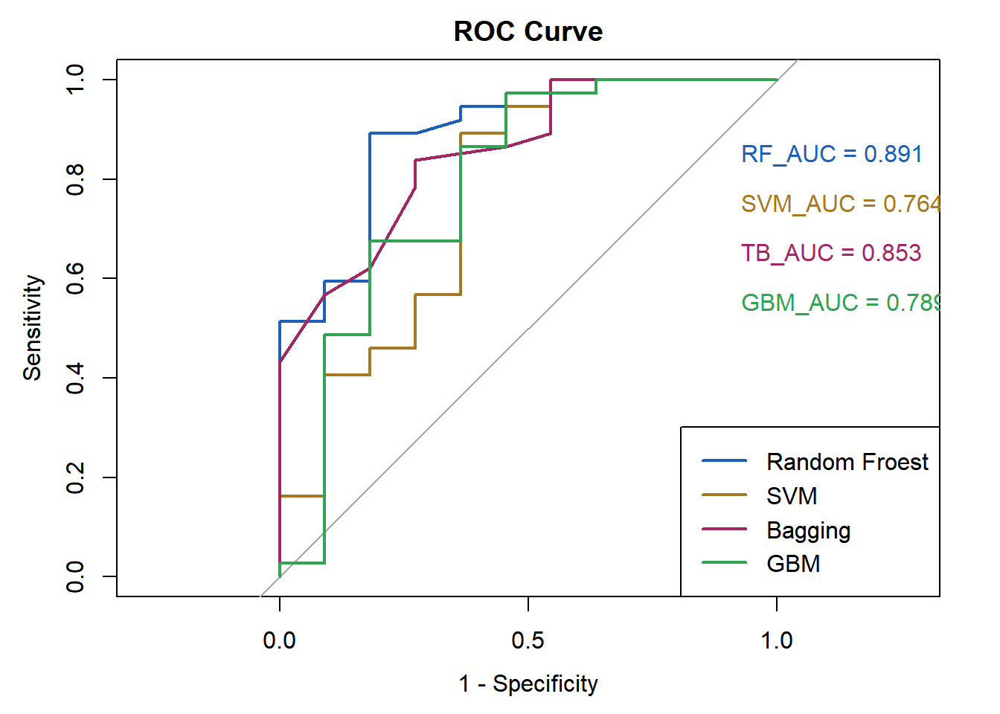
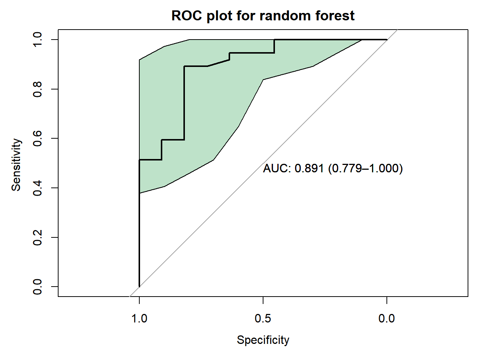

knitr::opts_chunk$set(
echo = TRUE,
message = FALSE,
warning = FALSE,
collapse= FALSE,
prompt=TRUE,
comment=' '
)二分类机器学习模型
✏️本节导读
本节首先根据因变量ec50的取值大小将因变量转化为二分类变量；ec50<=300认为可能存在舒张血管的活性，记为“1”，反之认为没有舒张血管活性，记为“0”。
在boostrap抽样和网格调参的基础上构建机器学习模型——随机森林、支持向量机、梯度提升机，最终选取随机森林模型作为最优模型，准确率达到0.875，ROC曲线下面积达到0.891。
机器学习-二分类型变量
添加分类变量
查看分布
> library(ggplot2)
> ggplot(data = EC50_sp,aes(x=result))+
+ geom_bar()
数据分割
以75%的数据作为训练集，剩下的25%作为测试集。
> library(caret)> set.seed(1235)
> trainIndex1 <- createDataPartition(EC50_sp$result,times=1,p=0.75,list=FALSE,groups=min(5,length(EC50_sp$result)))
> Train1 <- EC50_sp[trainIndex1,] |>data.frame()
> Test1 <- EC50_sp[-trainIndex1,] |>data.frame()训练数据
交叉验证法与自助法
> #重复3次的10折交叉验证
> fitControl1 <- trainControl(method = "repeatedcv",number = 10,repeats = 3)
> #自助法抽样
> fitControl5 <- trainControl(method = "boot632",repeats = 3)在R语言的caret包中，trainControl函数是用来控制训练过程的各种参数的，其中method参数指定了交叉验证或自助法（bootstrap）的具体方法。method参数值的解释：
“boot632”: 指的是.632自助法（bootstrap），也称为.632+自助法的一个简化版本（不计算偏差校正项）。这种方法通过自助法生成多个训练集，并在这些训练集上评估模型，同时使用未用于训练的原始数据部分来估计模型的性能。这种方法旨在减少过拟合导致的性能高估。。
“repeatedcv”: 表示重复交叉验证。这种方法通过多次执行交叉验证（每次重新划分数据集），然后取结果的平均值，来减少因单次交叉验证划分不当导致的性能估计偏差。
决策树
> library(rpart)
> library(rpart.plot)
> # 构建决策树模型
> model1 <- rpart(result ~.-ec50, data = EC50_sp)
> # 绘制决策树路径图
> rpart.plot(model1)
> model2 <- rpart(result ~.-ec50, data = Train1)
> # 绘制决策树路径图
> rpart.plot(model2)
> predictions <- predict(model2,Test1,type = "class")
> library(e1071)
> confusionMatrix(predictions,Test1$result) Confusion Matrix and Statistics
Reference
Prediction 0 1
0 6 1
1 5 36
Accuracy : 0.875
95% CI : (0.7475, 0.9527)
No Information Rate : 0.7708
P-Value [Acc > NIR] : 0.05453
Kappa : 0.5944
Mcnemar's Test P-Value : 0.22067
Sensitivity : 0.5455
Specificity : 0.9730
Pos Pred Value : 0.8571
Neg Pred Value : 0.8780
Prevalence : 0.2292
Detection Rate : 0.1250
Detection Prevalence : 0.1458
Balanced Accuracy : 0.7592
'Positive' Class : 0
随机森林Random Forest
对于不同的方法的讨论：结果得到632自助法（bootstrap）准确率和Kappa值较高。因此使用自助法作为抽样的原则。
> rf_grid <- expand.grid(
+ mtry = c(1,2,3,4,5,6,7,8,9,10)
+ )
> rffit5 <- train(result~.-ec50,data = Train1,method = "rf",trControl=fitControl5,verbose=FALSE,tuneGrid= rf_grid)
> rffit5 Random Forest
148 samples
15 predictor
2 classes: '0', '1'
No pre-processing
Resampling: Bootstrapped (25 reps)
Summary of sample sizes: 148, 148, 148, 148, 148, 148, ...
Resampling results across tuning parameters:
mtry Accuracy Kappa
1 0.8179884 0.3774983
2 0.8685912 0.5591723
3 0.8665796 0.5555321
4 0.8643487 0.5474613
5 0.8631097 0.5446083
6 0.8611067 0.5403579
7 0.8594403 0.5366790
8 0.8584365 0.5352371
9 0.8568913 0.5350337
10 0.8554670 0.5314754
Accuracy was used to select the optimal model using the largest value.
The final value used for the model was mtry = 2.> library(e1071) # 加载e1071包以使用confusionMatrix函数
> predictions <- predict(rffit5,Test1)
> confusionMatrix(predictions,Test1$result) Confusion Matrix and Statistics
Reference
Prediction 0 1
0 5 0
1 6 37
Accuracy : 0.875
95% CI : (0.7475, 0.9527)
No Information Rate : 0.7708
P-Value [Acc > NIR] : 0.05453
Kappa : 0.5623
Mcnemar's Test P-Value : 0.04123
Sensitivity : 0.4545
Specificity : 1.0000
Pos Pred Value : 1.0000
Neg Pred Value : 0.8605
Prevalence : 0.2292
Detection Rate : 0.1042
Detection Prevalence : 0.1042
Balanced Accuracy : 0.7273
'Positive' Class : 0
支持向量机SVM
> library(kernlab)
> tuneGrid1 <- expand.grid(C = c(0.2,0.3,0.4,0.5,0.6), sigma = c(2,3,4,5))
> set.seed(2024)
> svmfit5 <- train(result~.-ec50,data = Train1,method = "svmRadial",trControl=fitControl5,tuneGrid= tuneGrid1,prob.model=T)
> svmfit5 Support Vector Machines with Radial Basis Function Kernel
148 samples
15 predictor
2 classes: '0', '1'
No pre-processing
Resampling: Bootstrapped (25 reps)
Summary of sample sizes: 148, 148, 148, 148, 148, 148, ...
Resampling results across tuning parameters:
C sigma Accuracy Kappa
0.2 2 0.8560583 0.4661203
0.2 3 0.8487254 0.4605304
0.2 4 0.8619786 0.4666167
0.2 5 0.8586950 0.4507464
0.3 2 0.8608576 0.4794253
0.3 3 0.8627723 0.4726130
0.3 4 0.8619393 0.4667294
0.3 5 0.8591547 0.4518690
0.4 2 0.8580165 0.4779062
0.4 3 0.8613499 0.4695309
0.4 4 0.8614878 0.4642735
0.4 5 0.8586280 0.4497436
0.5 2 0.8557410 0.4668841
0.5 3 0.8618358 0.4706223
0.5 4 0.8610425 0.4640047
0.5 5 0.8581926 0.4476850
0.6 2 0.8581433 0.4733016
0.6 3 0.8613587 0.4697097
0.6 4 0.8610592 0.4621726
0.6 5 0.8577134 0.4457371
Accuracy was used to select the optimal model using the largest value.
The final values used for the model were sigma = 3 and C = 0.3.> predictions1 <- predict(svmfit5,Test1)
> confusionMatrix(predictions1,Test1$result) Confusion Matrix and Statistics
Reference
Prediction 0 1
0 4 1
1 7 36
Accuracy : 0.8333
95% CI : (0.6978, 0.9252)
No Information Rate : 0.7708
P-Value [Acc > NIR] : 0.1976
Kappa : 0.4164
Mcnemar's Test P-Value : 0.0771
Sensitivity : 0.36364
Specificity : 0.97297
Pos Pred Value : 0.80000
Neg Pred Value : 0.83721
Prevalence : 0.22917
Detection Rate : 0.08333
Detection Prevalence : 0.10417
Balanced Accuracy : 0.66830
'Positive' Class : 0
梯度提升机GBM
> set.seed(2024)
> gbm_grid <- expand.grid(
+ shrinkage = c(0.01, 0.1, 0.2),
+ n.trees = c(50, 100, 200),
+ interaction.depth = c(1, 2, 3),
+ n.minobsinnode = 10
+ )
> gbmfit5 <- train(result~.-ec50,data = Train1,method = "gbm",trControl=fitControl5,tuneGrid = gbm_grid,verbose=FALSE)
> gbmfit5 Stochastic Gradient Boosting
148 samples
15 predictor
2 classes: '0', '1'
No pre-processing
Resampling: Bootstrapped (25 reps)
Summary of sample sizes: 148, 148, 148, 148, 148, 148, ...
Resampling results across tuning parameters:
shrinkage interaction.depth n.trees Accuracy Kappa
0.01 1 50 0.7570886 0.005618849
0.01 1 100 0.7841604 0.201798025
0.01 1 200 0.7894768 0.263800824
0.01 2 50 0.7570886 0.005618849
0.01 2 100 0.7772554 0.151513831
0.01 2 200 0.7957717 0.296015996
0.01 3 50 0.7570886 0.005618849
0.01 3 100 0.7913396 0.243024740
0.01 3 200 0.8023960 0.337350838
0.10 1 50 0.7940798 0.313779293
0.10 1 100 0.7996922 0.351142918
0.10 1 200 0.8259651 0.465777027
0.10 2 50 0.8045597 0.378091042
0.10 2 100 0.8222398 0.450117594
0.10 2 200 0.8343082 0.483785285
0.10 3 50 0.8097707 0.403012684
0.10 3 100 0.8366398 0.488751810
0.10 3 200 0.8340352 0.481674704
0.20 1 50 0.8079546 0.382684173
0.20 1 100 0.8076505 0.406614413
0.20 1 200 0.8289100 0.484072848
0.20 2 50 0.8219815 0.450325967
0.20 2 100 0.8339739 0.492343087
0.20 2 200 0.8276351 0.474563755
0.20 3 50 0.8364442 0.490452789
0.20 3 100 0.8330239 0.483964164
0.20 3 200 0.8384643 0.491033110
Tuning parameter 'n.minobsinnode' was held constant at a value of 10
Accuracy was used to select the optimal model using the largest value.
The final values used for the model were n.trees = 200, interaction.depth =
3, shrinkage = 0.2 and n.minobsinnode = 10.> predictions2 <- predict(gbmfit5,Test1)
> confusionMatrix(predictions2,Test1$result) Confusion Matrix and Statistics
Reference
Prediction 0 1
0 4 0
1 7 37
Accuracy : 0.8542
95% CI : (0.7224, 0.9393)
No Information Rate : 0.7708
P-Value [Acc > NIR] : 0.11122
Kappa : 0.4684
Mcnemar's Test P-Value : 0.02334
Sensitivity : 0.36364
Specificity : 1.00000
Pos Pred Value : 1.00000
Neg Pred Value : 0.84091
Prevalence : 0.22917
Detection Rate : 0.08333
Detection Prevalence : 0.08333
Balanced Accuracy : 0.68182
'Positive' Class : 0
树袋模型Treebag
> set.seed(2024)
> library(ipred)
> bagfit5 <- train(result~.-ec50, data = Train1, method = "treebag", trControl = fitControl5)
> bagfit5 Bagged CART
148 samples
15 predictor
2 classes: '0', '1'
No pre-processing
Resampling: Bootstrapped (25 reps)
Summary of sample sizes: 148, 148, 148, 148, 148, 148, ...
Resampling results:
Accuracy Kappa
0.8299043 0.472475> predictions3 <- predict(bagfit5,Test1)
> confusionMatrix(predictions3,Test1$result) Confusion Matrix and Statistics
Reference
Prediction 0 1
0 4 0
1 7 37
Accuracy : 0.8542
95% CI : (0.7224, 0.9393)
No Information Rate : 0.7708
P-Value [Acc > NIR] : 0.11122
Kappa : 0.4684
Mcnemar's Test P-Value : 0.02334
Sensitivity : 0.36364
Specificity : 1.00000
Pos Pred Value : 1.00000
Neg Pred Value : 0.84091
Prevalence : 0.22917
Detection Rate : 0.08333
Detection Prevalence : 0.08333
Balanced Accuracy : 0.68182
'Positive' Class : 0
Kappa值的判定标准
用于衡量分类任务中两个观察者（或模型预测与真实标签）之间一致性的统计指标。
0.00~0.20：极低的一致性（slight），表示评估结果或模型预测与实际标签之间的一致性很差，可能存在较大的差异。
0.21~0.40：较低的一致性（fair），表示有一定的一致性，但整体仍然偏低。
0.41~0.60：中等的一致性（moderate），表示评估结果或模型预测与实际标签之间的一致性较为适中。
0.61~0.80：较高的一致性（substantial），表示评估结果或模型预测与实际标签之间的一致性较高。
0.81~1.00：高一致性（almost perfect），表示评估结果或模型预测与实际标签之间的一致性几乎完全一致。
绘制ROC曲线
> library(randomForest)
> library(e1071) > set.seed(2024)
> rf_probs <- predict(rffit5, Test1, type = "prob")[, 2] # 第二列是预测为正类的概率
> probabilities <- predict(svmfit5, Test1, type = "prob")[, 2] # 假设我们关注第二个类别（versicolor）
> prediction <- predict(bagfit5, newdata = Test1, type = "prob")[,2]
> gbmprediction <- predict(gbmfit5, newdata = Test1, type = "prob")[,2] > # 绘制ROC曲线
> library(pROC)
> rocCurve <- roc(Test1$result, rf_probs)
> auc_value <- auc(rocCurve)
> plot(rocCurve, main = "ROC Curve", col = "#1c61b6", lwd = 2,legacy.axes=TRUE)
> text(x = 0.1, y = 0.85, labels = paste("RF_AUC =", round(auc_value, 3)), cex = 1, pos = 4,col="#1c61b6")
>
> # 添加第二个模型的ROC曲线
> rocCurve2 <- roc(Test1$result, probabilities)
> auc_value2 <- auc(rocCurve2)
> lines(rocCurve2, col = "#a67925", lwd = 2)
> text(x = 0.1, y = 0.75, labels = paste("SVM_AUC =", round(auc_value2, 3)), cex = 1, pos = 4,col="#a67925")
> # 添加第三个模型的ROC曲线
> rocCurve3 <- roc(Test1$result, prediction)
> auc_value3 <- auc(rocCurve3)
> lines(rocCurve3, col = "#a32765", lwd = 2)
> text(x = 0.1, y = 0.65, labels = paste("TB_AUC =", round(auc_value3, 3)), cex = 1, pos = 4,col="#a32765")
> # 添加第四个模型的ROC曲线
> rocCurve4 <- roc(Test1$result, gbmprediction)
> auc_value4 <- auc(rocCurve4)
> lines(rocCurve4, col = "#31A354", lwd = 2)
> text(x = 0.1, y = 0.55, labels = paste("GBM_AUC =", round(auc_value4, 3)), cex = 1, pos = 4,col="#31A354")
> # 添加图例
> legend("bottomright", legend = c("Random Froest", "SVM","Bagging","GBM"), col = c("#1c61b6", "#a67925","#a32765","#31A354"), lwd=2,cex = 1)
AUC值最高的模型——随机森林模型的单独的ROC曲线。
> rocobj <- plot.roc(Test1$result, rf_probs,
+
+ main="ROC plot for random forest",
+
+ ci=TRUE, # compute AUC (of AUC by default)
+
+ print.auc=TRUE,
+ xlim=c(1, 0),
+ ylim=c(0, 1),
+ xlab="Specificity",
+ ylab="Sensitivity ") # print the AUC (will contain the CI)
>
> ciobj <- ci.se(rocobj)
>
> plot(ciobj, type="shape", col="#31A35450" ) # plot as a blue shape
什么是无信息率
- 定义
- 无信息率（Null Information Rate，NIR）是在评估分类模型性能时使用的一个概念。它是基于目标变量（类别标签）的先验分布计算出来的一个基准比率，代表了在没有任何有用信息（即随机猜测）的情况下能够达到的分类准确率。
- 例如，在一个二分类问题中，如果两类的样本比例是70%和30%，那么随机猜测的准确率（也就是无信息率）就是70%，因为总是猜测占比大的那一类可以得到最高的随机猜测准确率。
- 计算方法
- 对于分类问题（以多分类为例）
- 假设目标变量有(k)个类别，每个类别(i)的样本数为(n_i)，总样本数为(N=_{i = 1}^{k}n_i)。
- 先计算每个类别在数据集中的占比(p_i=)。
- 无信息率(NIR = (p_1,p_2,,p_k))，即各类别占比中的最大值。
- 示例
- 假设有一个三分类问题，类别A有40个样本，类别B有30个样本，类别C有30个样本。总样本数(N = 40+30+30 = 100)。
- 类别A的占比(p_A==0.4)，类别B的占比(p_B==0.3)，类别C的占比(p_C==0.3)。
- 那么无信息率(NIR=(0.4,0.3,0.3)=0.4)。
- 对于分类问题（以多分类为例）
- 作用
- 作为模型性能评估的基准
- 它为评估分类模型的性能提供了一个下限参考。如果一个模型的准确率低于无信息率，那么这个模型可能是没有价值的，甚至比随机猜测还差。
- 用于比较不同模型或算法
- 在比较不同的分类模型或算法时，除了看它们的准确率等指标外，还可以看它们相对于无信息率的提升程度。例如，模型A的准确率是70%，无信息率是60%；模型B的准确率是75%，无信息率是50%。虽然模型B的准确率更高，但模型A相对于无信息率的提升比例((70% - 60%)/60%=)，模型B相对于无信息率的提升比例((75% - 50%)/50%=)，从这个角度看，模型B的性能提升更显著。
- 作为模型性能评估的基准
Note
从相对提升的角度来看，10% 的提升是否足够好取决于具体的应用场景和数据特点。 在一些对准确率要求不是极高的场景下，10% 的提升可能是可以接受的，并且说明模型能够捕捉到一些数据中的规律来进行有效预测。 然而，在一些对预测精度要求很高的领域，如医疗诊断、金融风险预测等，10% 的提升可能并不足够。例如，在医疗诊断中，即使是很小的错误率也可能导致严重的后果，可能需要寻找更优的模型或者进一步优化当前模型来提高准确率。